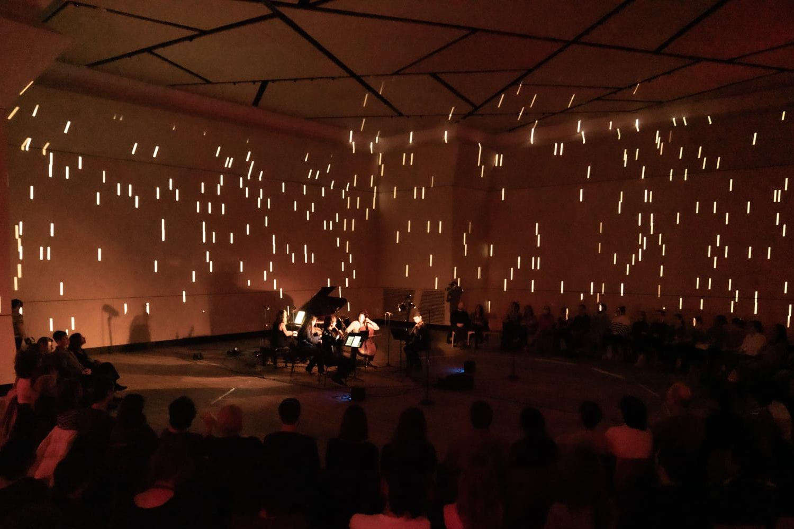

CreArtBox
CreArtBox es un colectivo de música de cámara y multimedia con base en Nueva York, fundado en 2013 por el flautista Guillermo Laporta y la pianista Josefina Urraca, con Emilie-Anne Gendron, Matthew Cohen y Julia Yang como miembros estables. Va por su duodécima temporada: da su Serie de Nueva York en The DiMenna Center for Classical Music y sale de gira por Estados Unidos y por el extranjero.
The New Yorker lo ha incluido entre sus recomendaciones de arte y música, Time Out lo ha descrito como «un ensemble dedicado a los eventos multidisciplinares» y BroadwayWorld, como «del todo auténtico, y convincente por la vista y por el oído». CreArtBox mezcla música clásica y contemporánea con escenografía propia y artes visuales.
Mantiene una convocatoria abierta de partituras desde su primera temporada: once obras de la temporada 2026/27 han llegado al programa por esa vía. Su trabajo cuenta con el apoyo del New York State Council on the Arts, el NYC Department of Cultural Affairs, la Amphion Foundation, el Alice M. Ditson Fund y el Aaron Copland Fund for Music. Cada agosto coproduce el Festival ADAR, en la Asturias rural.
Critics top pick for the best music, art and theatre.
The New Yorker · Recomendaciones de arte y músicaA wholly authentic, visually and aurally compelling experience.
Broadway World · sobre una producción de CreArtBox